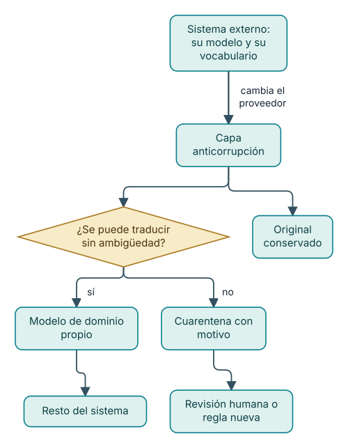
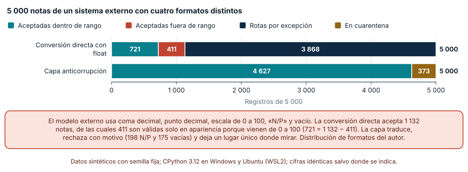
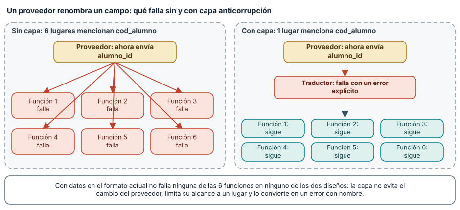
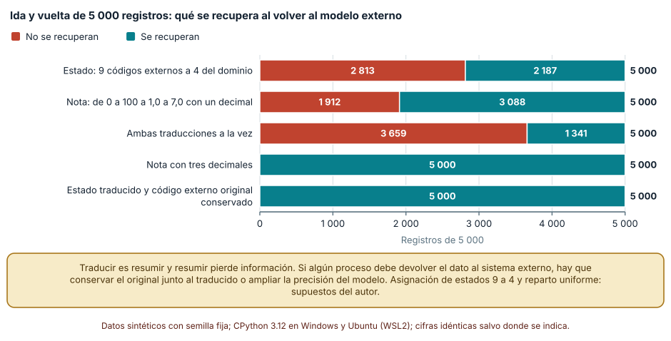

← SE-380 — Compatibilidad de esquemas y registros · ↑ Parte 31 · 📚 Índice completo · 🌐 Portal · SE-382 — Observabilidad y seguridad de integraciones →
Punto profesional y fundamento pedagógico
Punto profesional. La clase existe para que protejas el modelo de tu sistema de las rarezas de otro que no controlas: aprenderás a medir qué ocurre cuando los datos de un sistema externo entran sin traducir (cuántos registros rompen el sistema y cuántos entran con otro significado), cuántos puntos de tu código se ven afectados cuando el proveedor cambia un nombre y cuánta información pierde una traducción que resume varios códigos en uno.
Por qué aparece aquí. Sigue a Compatibilidad de esquemas y registros: allí el problema era evolucionar un contrato propio; aquí el contrato es ajeno, no negociable y con vocabulario distinto. La plataforma de entregas importa calificaciones de un sistema académico externo que usa códigos de estudiante con prefijo, notas en tres formatos y nueve códigos de estado, y su modelo de dominio tiene otro lenguaje.
Error conceptual que debe corregir. Creer que adaptar un sistema externo es «convertir tipos» y que el código interno puede usar directamente sus nombres. Sin una frontera, el vocabulario del otro sistema se infiltra en todo el código, cada cambio suyo se vuelve un cambio tuyo en muchos lugares y sus ambigüedades pasan a ser tuyas sin que nadie lo decida. Por otro lado, traducir también es resumir: cada traducción pierde información que quizá se necesite después.
Secuencia de aprendizaje. Antes de leer los resultados, predices cuántas de 5 000 notas externas rompe una conversión directa y cuántas deja pasar con un significado distinto, cuántas funciones fallan cuando el proveedor renombra un campo con y sin capa de traducción y qué fracción de los registros no se puede recuperar tras traducir nueve estados a cuatro; después mides las tres cosas y comparas con tu predicción. La secuencia usa predicción, explicación propia, contraste y recuperación. ICAP distingue participación de construcción de conocimiento; How People Learn II exige conectar conocimiento previo, contexto y transferencia; la práctica de recuperación respalda producir de nuevo la explicación tras una demora; y Education for Life and Work exige devolución que explique la causa del error.
Evidencia de aprendizaje. traduccion-log.md con las predicciones, las tres figuras reproducidas, el mapa de traducción del sistema académico (campo, tipo, unidad, vocabulario y estado), la política de cuarentena para lo ambiguo y una nota que diga qué información del sistema externo se conserva y cuál se descarta.
Límite de la conclusión. El «sistema externo» es un generador sintético del autor con cuatro rarezas inventadas (coma decimal, escala de 0 a 100, «N/P» y vacío); los porcentajes de cada formato, la asignación de nueve códigos a cuatro estados y las seis funciones de ejemplo son construcciones didácticas. No se usó ningún sistema académico real ni una API de terceros: los resultados muestran un mecanismo, no la calidad de ningún proveedor.
Trazabilidad fuente → afirmación
| Fuente primaria u oficial | Afirmación que respalda | Lo que no prueba |
|---|---|---|
| Microsoft: patrón Anti-Corruption Layer | Describe una capa que traduce entre dos subsistemas con semánticas distintas para que el nuevo no adopte el modelo del anterior. | No dice cuánto cuesta mantenerla ni cuándo es excesiva. |
| Evans, «Domain-Driven Design Reference» | Resume el patrón de capa anticorrupción y otras relaciones entre contextos delimitados, como el conformista o el núcleo compartido. | No decide qué relación conviene con el sistema académico. |
| Fowler, «Bounded Context» | Explica que cada contexto tiene su propio modelo y vocabulario y que el mismo término puede significar cosas distintas. | No mide el costo de traducir entre contextos. |
| EIP: Message Translator | Describe un componente que convierte un mensaje de un formato a otro para que los sistemas no dependan del formato del otro. | No trata los casos ambiguos ni la pérdida de información. |
| RFC 3339: fechas y horas en Internet | Define un formato de fecha y hora sin ambigüedad de orden de campos ni zona. | No resuelve qué formato usa un sistema que no lo declara. |
Antes de empezar
Recupera lo aprendido en SE-380 (los esquemas evolucionan y los lectores tolerantes limitan el daño) y en la Parte 27 sobre contextos delimitados: cada parte del sistema tiene su propio lenguaje. La pregunta activa es: ¿qué palabra de ese sistema ha entrado en mi código sin que yo la eligiera, y qué pasa el día que la cambien?
Prerrequisitos
- Haber completado
SE-380o poder explicar la diferencia entre un lector tolerante y uno estricto. - Python 3.11 o posterior; los experimentos usan solo la biblioteca estándar y generadores con semilla fija.
- Leer funciones de Python de pocas líneas y entender qué es un diccionario y una excepción.
Problema auténtico
La plataforma importa las calificaciones de un sistema académico externo. El primer integrador escribió un fragmento que lee cod_alumno, convierte nota con float y guarda estado tal cual. Funcionó con los datos de prueba, que venían con punto decimal. En producción, el 70 % de las notas llega con coma ("6,5"), unas pocas son "N/P" o están vacías y un 8 % viene en una escala de 0 a 100 que float acepta sin quejarse: la nota "65" se guarda como 65,0 en un campo que va de 1,0 a 7,0 y arruina los promedios. Seis funciones de la plataforma usan el nombre cod_alumno directamente; cuando el proveedor lo renombra a alumno_id sin avisar, seis lugares fallan a la vez. Más tarde, para devolver notas corregidas, descubren que el estado externo tiene nueve códigos y el interno cuatro, y no pueden reconstruir cuál era el original. Los tres problemas se resuelven con una frontera, y cada uno se resuelve de forma distinta.
Objetivos observables
Al terminar podrás:
- medir cuántos registros externos rompe una conversión directa y cuántos deja entrar con otro significado;
- implementar una traducción con normalización, rechazo con motivo y cuarentena, y comparar sus resultados con la conversión directa;
- contar cuántos puntos del código dependen de un nombre externo con y sin capa, y ejecutar un cambio del proveedor para ver qué falla;
- medir qué información se pierde al traducir varios códigos externos a menos conceptos y cómo se conserva el original;
- escribir el mapa de traducción y la política de cuarentena de un sistema externo.
Mapa conceptual

El mapa muestra la capa como única puerta entre los dos modelos: lo ambiguo no entra, lo traducible se normaliza y los cambios del proveedor se absorben en un lugar.
Temas y por qué importan
| Tema | Por qué cambia una decisión profesional | Evidencia mínima |
|---|---|---|
| Contaminación del modelo | El vocabulario ajeno se extiende por el código y lo hace dependiente. | Predicción, traza causal y contraejemplo de Contaminación del modelo en traduccion-log.md |
| Traducción | Convertir formato, unidad y vocabulario en un solo lugar. | Predicción, traza causal y contraejemplo de Traducción en traduccion-log.md |
| Cuarentena | Lo ambiguo no se adivina: se aparta con un motivo. | Predicción, traza causal y contraejemplo de Cuarentena en traduccion-log.md |
| Pérdida de información | Traducir resume, y lo resumido no vuelve. | Predicción, traza causal y contraejemplo de Pérdida de información en traduccion-log.md |
| Ubicación y alternativas | La capa tiene dueño y costo; hay relaciones que no la necesitan. | Predicción, traza causal y contraejemplo de Ubicación y alternativas en traduccion-log.md |
Conceptos y decisiones
1. Contaminación del modelo
Un contexto delimitado es el ámbito donde un modelo y su vocabulario tienen un significado único. «Nota» en la plataforma es un número de 1,0 a 7,0; en el sistema académico es una cadena que puede tener coma, estar vacía o significar un porcentaje. Cuando el código de la plataforma usa los nombres y tipos del sistema externo, el modelo ajeno se filtra: los nombres cod_alumno y estado = "E" aparecen en cálculos, informes y pruebas, y cada cambio o rareza del proveedor se convierte en un cambio o un defecto interno. La contaminación no es un error de sintaxis; es una dependencia que nadie decidió y que crece con cada función que toca el dato externo.
2. Traducción
Una capa anticorrupción es un componente cuya única tarea es traducir entre el modelo externo y el propio, y es el único lugar que conoce ambos. Traduce cuatro cosas: nombres (cod_alumno a estudiante_id), formatos y unidades (coma decimal, escala de 0 a 100, formatos de fecha), vocabulario (nueve códigos de estado a los cuatro conceptos de la plataforma) y estructura (un registro plano a un agregado). Todo lo que sale de ella ya es lenguaje del dominio propio y valida sus invariantes: una nota fuera de 1,0 a 7,0 no cruza la frontera. El resto del código no importa el módulo externo ni usa sus nombres.
3. Cuarentena
No todo se puede traducir sin ambigüedad. Una nota vacía no es una nota cero; "N/P" puede significar «no presentó» o «no procede»; una fecha 03/04/2026 es el 3 de abril o el 4 de marzo según una convención que el proveedor puede no haber declarado. Adivinar es fabricar datos. La política correcta es apartar el registro a una cuarentena con su motivo, contar cuántos hay por motivo y decidir con el dueño del dato si se añade una regla, se pide una aclaración o se descarta. La capa que rechaza en silencio es tan peligrosa como la que acepta todo; la cuarentena hace visible lo que no se pudo traducir.
4. Pérdida de información
Traducir es resumir. Si nueve códigos externos de estado se convierten en cuatro conceptos internos, el original no se puede recuperar del resultado: dos códigos distintos producen el mismo estado interno. Lo mismo ocurre con una nota de 0 a 100 convertida a una escala de 1,0 a 7,0 con un decimal: varias notas externas caen en la misma interna. Esto es aceptable mientras ningún proceso necesite devolver el dato al sistema externo. Si lo necesita, la traducción debe conservar el original junto al traducido, o ampliar la precisión del modelo interno. La decisión es explícita: qué se descarta, qué se guarda y por qué.
5. Ubicación y alternativas
La capa tiene un dueño (el equipo que integra con el proveedor), un lugar (un módulo o un servicio) y pruebas propias con ejemplos reales del proveedor, incluidas sus rarezas. No es gratuita: añade código, retrasa los cambios que sí quieres adoptar y puede esconder semánticas que convendría discutir con el proveedor. Hay relaciones en que no hace falta: si el modelo externo es bueno y estable, se puede adoptar tal cual (conformista); si dos equipos cooperan estrechamente, pueden compartir un modelo (núcleo compartido). La capa se justifica cuando el modelo ajeno es peor que el propio, cambia sin avisar o no se puede influir.
Qué entra cuando no hay frontera
Se generan con semilla fija 5 000 registros externos. La nota llega como "6,5" (70 %), "6.5" (15 %), escala de 0 a 100 como "65" (8 %), "N/P" (4 %) o vacía (3 %). La conversión directa hace float(nota). La capa normaliza la coma, convierte la escala de 0 a 100 a 1,0 a 7,0 y aparta "N/P", los vacíos y cualquier valor fuera de rango.
v = float(n.replace(",", "."))
if "," not in n and "." not in n and v > 7:
v = round(1 + 6 * v / 100, 1) # escala 0-100 -> 1,0-7,0
if not 1.0 <= v <= 7.0:
cuarentena.append((registro, "fuera de rango"))| Adaptador | Aceptadas | Rotas por excepción | Aceptadas fuera de rango | En cuarentena |
|---|---|---|---|---|
Conversión directa con float | 1 132 | 3 868 | 411 | 0 |
| Capa anticorrupción | 4 627 | 0 | 0 | 373 (198 «N/P», 175 vacías) |
La conversión directa rompe con 3 868 de los 5 000 registros (los de coma, los «N/P» y los vacíos) y, peor, acepta 411 notas de la escala de 0 a 100 como si fueran notas válidas: un "65" se guarda como 65,0. La capa entrega 4 627 notas normalizadas (3 906 necesitaron coma o escala) y aparta 373 con su motivo. Un detalle que ninguna regla resuelve: 1 112 de las fechas del proveedor (dd/mm/aaaa con el día en 1 a 12) son ambiguas entre día y mes sin una convención declarada.

Cómo leer la figura. Cada barra es un adaptador y sus segmentos reparten los 5 000 registros por destino. Mira primero el segmento coral de la conversión directa: son notas aceptadas que significan otra cosa, y el segmento dorado de la capa: registros apartados con motivo en lugar de aceptados mal. Dónde deja de valer: el reparto de formatos es una invención del autor y las reglas se escribieron mirando estos mismos formatos, así que no hay estimación de cuántos formatos reales faltarían. Convertir la escala de 0 a 100 por una fórmula lineal es una suposición que el proveedor debería confirmar: la capa sabe lo que se le dijo, no lo que el proveedor quiso decir.
Qué ocurre cuando el proveedor cambia un nombre
Se escribe un mini-sistema de seis funciones (boletín, promedio, alertas, informe, exportar y auditar) en dos versiones: la primera usa cod_alumno y nota directamente; la segunda recibe el registro ya traducido por una función traducir que es la única que menciona cod_alumno. Se ejecutan ambas con el formato actual y con el campo renombrado a alumno_id, y se cuentan las funciones que lanzan una excepción.
def traducir(r):
return {"estudiante_id": r["cod_alumno"], "nota": float(r["nota"].replace(",", ".")), "estado": r["estado"]}| Situación | Sin capa anticorrupción | Con capa anticorrupción |
|---|---|---|
| Datos con el formato actual | 0 de 6 funciones fallan | 0 de 6 funciones fallan |
El proveedor renombra cod_alumno a alumno_id | 6 de 6 funciones fallan | 1 falla: el traductor, con error explícito |
Lugares del código que mencionan cod_alumno | 6 | 1 |
Con la capa, el cambio del proveedor produce un error en un lugar, con un mensaje que nombra el campo que falta, y el resto del código ni se entera. Sin ella, seis funciones fallan cada una a su manera y quien depura debe descubrir qué tienen en común. La capa no evita el cambio, lo acota; sigue haciendo falta una alarma que avise cuando el traductor empiece a fallar.

Cómo leer la figura. Cada panel es un diseño: a la izquierda, seis funciones conectadas directamente con el proveedor; a la derecha, un traductor entre el proveedor y las seis funciones. Los recuadros coral fallan y los verdes azulados siguen. Mira cuántos recuadros coral hay en cada panel: ese número es el alcance del cambio del proveedor. Dónde deja de valer: las seis funciones las escribió el autor para el ejercicio y se ejecutaron de verdad con el campo original y con el renombrado; no son una medida de ningún proyecto real, y un proyecto con la dependencia más repartida tendría más que contar. La cuenta de lugares es exacta para este código, no un indicador general.
Lo que no vuelve tras la traducción
Se toman 5 000 registros con un estado externo entre nueve códigos y una nota entera de 0 a 100. Los nueve estados se traducen a cuatro (entregada, calificada, pendiente, anulada); la nota se convierte a la escala de 1,0 a 7,0 con uno o con tres decimales. Se vuelve al modelo externo y se cuentan los registros que no recuperan su valor original.
a_dom = lambda n: round(1 + 6 * n / 100, 1)
a_ext = lambda v: round((v - 1) * 100 / 6)
alterada = a_ext(a_dom(n)) != n| Traducción | No se recuperan | Se recuperan |
|---|---|---|
| Estado: 9 códigos externos a 4 del dominio | 2 813 | 2 187 |
| Nota: de 0 a 100 a 1,0 a 7,0 con un decimal | 1 912 | 3 088 |
| Ambas traducciones a la vez | 3 659 | 1 341 |
| Nota con tres decimales | 0 | 5 000 |
| Estado traducido con el código externo conservado | 0 | 5 000 |
Resumir nueve estados en cuatro impide recuperar el original en el 56 % de los registros; un decimal de nota pierde el 38 %; las dos juntas alteran el 73 %. Con tres decimales la nota vuelve exacta, y conservar el código externo junto al traducido devuelve todos los estados. La decisión no es «traducir o no»: es qué se guarda además del traducido.

Cómo leer la figura. Cada barra es una traducción y su segmento coral es la parte de los 5 000 registros que no se recupera al volver; el verde azulado es la que sí. Mira cuántas barras llegan al final sin segmento coral y por qué: ampliar la precisión o conservar el original evita la pérdida. Dónde deja de valer: el reparto uniforme de los nueve estados y de las notas es del autor, y la asignación de nueve a cuatro también; con otro mapa los porcentajes cambian. El experimento no dice cuánta información es relevante para el negocio, solo que existe y se pierde.
Definiciones de trabajo
- contexto delimitado: ámbito dentro del cual un modelo y su vocabulario tienen un significado único.
- capa anticorrupción: componente que traduce entre el modelo de otro sistema y el propio, y es el único que conoce ambos.
- cuarentena: destino de los registros que no se pueden traducir sin ambigüedad, con el motivo del rechazo.
- traducción con pérdida: conversión en la que dos valores de origen distintos producen el mismo valor de destino.
- conformista: relación en la que un sistema adopta tal cual el modelo de otro.
Las definiciones son operativas para la plataforma de entregas. No convierten términos con una historia más amplia en sinónimos y deben contrastarse con la documentación primaria enlazada al final.
Ejemplo mínimo
El fragmento convierte una nota con coma y una en escala de 0 a 100. Antes de ejecutarlo, predice el resultado de float directo sobre cada una y el de la traducción.
def traducir_nota(n):
v = float(n.replace(",", "."))
if "," not in n and "." not in n and v > 7: v = round(1 + 6 * v / 100, 1)
if not 1.0 <= v <= 7.0: raise ValueError(f"fuera de rango: {n}")
return v
for n in ["6,5", "65"]:
try: print(n, "float:", float(n))
except ValueError: print(n, "float: falla")
print(n, "traducida:", traducir_nota(n))float("6,5") falla y float("65") da 65,0; la traducción da 6,5 y 4,9. Registra versión de Python y salida; después añade "N/P" y decide qué hace la traducción con él.
Ejemplo profesional
El equipo de la plataforma crea el módulo integracion/academico/ con tres archivos. mapa.md documenta cada campo (nombre externo, tipo, unidad, nombre interno y regla), los nueve estados y su traducción a los cuatro conceptos de la plataforma, y qué se conserva. traducir.py es la única parte del código que importa el esquema externo: produce objetos del dominio, aparta a la cuarentena (con motivo) lo que no puede traducir y guarda siempre el código de estado original junto al traducido. tests/ contiene 30 registros reales anonimizados del proveedor, cada uno con su rareza, y una prueba de contrato que falla si el proveedor cambia un nombre. Las notas se validan contra la invariante del dominio (1,0 a 7,0) en la frontera, no en cada consumidor. Una alarma cuenta los registros en cuarentena por motivo y avisa si superan el 2 % de un lote. Antes de activar el flujo, el equipo pide al proveedor que declare la convención de fechas y la escala de notas, y lo anota en el mapa. Compara con el fragmento original: ninguna función del dominio menciona cod_alumno, las notas fuera de rango no entran y el cambio de nombre produce un solo error con el nombre del campo.
Práctica guiada
- Lista los nombres y códigos del sistema externo que hoy aparecen en tu código y cuenta en cuántos lugares.
- Predice cuántas de 5 000 notas rompe
floaty cuántas deja pasar con otro significado. - Genera los 5 000 registros con la semilla dada y reproduce la tabla del adaptador directo y la capa.
- Escribe las seis funciones en dos versiones y ejecuta el cambio de nombre para contar las que fallan.
- Traduce nueve estados a cuatro y la nota con uno y tres decimales y mide los registros que no se recuperan.
- Escribe
mapa.mdcon campo, unidad, regla y qué se conserva, y la política de cuarentena con su umbral de alarma. - Entrega
traduccion-log.mdy pide a otra persona que encuentre un valor externo que tu capa traduciría mal.
Ejercicios
- Ambigüedad: una fecha llega como
04/05/2026; propone tres formas de resolverla y la que dejarías en la cuarentena. - Mapa: diseña la traducción de los nueve estados a cuatro y marca qué pares pierden diferencia relevante para el negocio.
- Costo: el proveedor cambia de forma el registro cada tres meses; estima cuántas pruebas de contrato necesitas y qué parte del cambio debe absorber la capa.
- Alternativa: razona si para un proveedor con un modelo estable y bien documentado usarías la capa o adoptarías su modelo como conformista, y qué te haría cambiar de opinión.
Reto verificable
Entrega traduccion-log.md con las predicciones, las tres tablas reproducidas con las mismas semillas, mapa.md con la política de cuarentena y la lista de lo que se conserva. Se aprueba si otra persona ejecuta el código desde un checkout limpio, obtiene 3 868 registros rotos y 411 aceptados fuera de rango con la conversión directa, 373 en cuarentena con la capa y 6 de 6 funciones fallando sin capa frente a 1 con ella, y puede decir qué información no se recupera tras traducir. No se aprueba por convertir con float sin validar el rango ni por una capa que rechaza en silencio.
Caso conductor
El flujo de entrega, calificación, aviso y registro de la plataforma es el caso conductor de la Parte 31. Esta clase deja el noveno artefacto: el mapa de traducción del sistema académico con su política de cuarentena. SE-382 pregunta cómo ver y proteger el flujo completo: observabilidad y seguridad de las integraciones. Cambia después una sola decisión, la precisión de la nota interna, y observa qué información deja de perderse.
Preguntas frecuentes
¿Una capa anticorrupción es un servicio aparte?
No necesariamente. Puede ser un módulo dentro del mismo proceso o un adaptador pequeño; lo esencial es que sea el único lugar que conoce el modelo externo. Se separa en un servicio cuando varios sistemas internos necesitan la misma traducción o cuando su despliegue debe ser independiente.
¿Qué hago con los registros en cuarentena?
Se revisan por motivo con el dueño del dato: unos se resuelven con una regla nueva, otros requieren una aclaración del proveedor y otros se descartan con registro de la decisión. La cuarentena sin dueño ni plazo es un cajón donde los datos desaparecen.
¿Traducir no duplica el modelo?
Sí, y esa es su función: tener dos modelos y una frontera explícita cuesta menos que uno solo contaminado cuando el modelo ajeno cambia o es peor que el propio. Si el modelo ajeno fuera adecuado y estable, la traducción sería un costo sin beneficio.
¿Cómo pruebo la capa?
Con ejemplos reales (anonimizados) de cada rareza del proveedor y con una prueba de contrato que falla si cambia un nombre o un tipo. Las pruebas con datos «bonitos» de documentación no encuentran los problemas que el proveedor tiene en producción.
Fallo controlado y diagnóstico
Reproduce el fallo clásico de la clase: una nota en otra escala que entra como válida. Importa registros con "65" usando float directo y calcula el promedio del curso.
Registra síntoma, entrada mínima, hipótesis, observación que descarta cada hipótesis, causa, corrección y prueba de regresión. Síntoma: el promedio de un curso es de 12,3 en una escala de 1,0 a 7,0. Hipótesis rivales: (a) un error de cálculo del promedio; (b) notas duplicadas; (c) valores fuera de la escala entraron como si fueran notas. Prueba: busca el máximo y el mínimo de la columna; si aparecen valores como 65,0 y 88,0, la causa son notas en otra escala. Conclusión: la conversión aceptó una cadena numérica sin validar la escala. Regresión: traducir la escala en la frontera, rechazar lo fuera de rango con motivo y una prueba que importe "65" y compruebe que entra como 4,9 o que se aparta, nunca como 65,0. No cambies a la vez la conversión y el cálculo del promedio.
Errores comunes y cómo corregirlos
| Síntoma | Causa probable | Corrección |
|---|---|---|
| El sistema falla en muchas funciones cuando el proveedor cambia | El nombre externo se usa en todo el código | Capa de traducción como único lugar que conoce el modelo externo |
| Valores absurdos en un cálculo | Datos externos aceptados sin validar la invariante | Validar rango y unidad en la frontera |
| No se puede devolver el dato al proveedor | La traducción resumió varios valores en uno | Conservar el original o ampliar la precisión |
| Registros que desaparecen sin rastro | La capa rechaza en silencio | Cuarentena con motivo, conteo y alarma |
| La capa crece sin control | Hace más de traducir | Mantener solo traducción, validación y cuarentena |
Entorno y archivos clave
work/SE-381/
├── README.md
├── integracion/academico/
│ ├── mapa.md
│ ├── traducir.py
│ └── cuarentena.py
├── tests/test_traduccion.py
└── evidence/traduccion-log.mdEl README declara plataforma, versión de Python, semillas y comandos. El código de los tres experimentos está en scripts/experiments_part31_b.py (funciones e333_registros, e333_cambio y e333_fidelidad) y se ejecuta con python scripts/experiments_part31_b.py. Solo usa la biblioteca estándar y se ejecutó con CPython 3.12.9 en Windows 11 y 3.12.3 en Ubuntu bajo WSL2: las salidas fueron idénticas. Si añades una dependencia, fija procedencia y versión.
Seguridad, ética y accesibilidad
- la capa es el lugar donde validar lo que llega de fuera: trata el dato externo como no confiable y rechaza lo que no cumpla la invariante;
- una nota mal traducida afecta a una persona: conserva el original y la traza de la conversión para poder explicar y corregir una calificación;
- la cuarentena guarda datos personales sin procesar: limita su acceso y su retención (
SE-358); - una decisión de resumir estados (por ejemplo, tratar «N/P» como cero) tiene consecuencias para quien la sufre: documenta la regla y quién la aprobó;
- los registros de prueba son sintéticos; no guardes datos reales sin anonimizar en el repositorio.
Puente hacia el trabajo con agentes
Un agente al que se le pide «integra con este sistema externo» suele usar directamente los nombres y tipos del proveedor en todo el código, convertir con float o int sin validar rango y escribir pruebas solo con datos bien formados. Pídele en cambio que cree un módulo de traducción que sea el único que conozca el esquema externo, que valide las invariantes del dominio, que aparte lo ambiguo a una cuarentena con motivo y que incluya pruebas con las rarezas conocidas y una de contrato. Revisa especialmente si el nombre externo aparece fuera del módulo de traducción y si algún valor fuera de rango puede entrar: son los dos defectos que esta clase mostró sin aviso.
Transferencia
Traslada el análisis a otro dominio (por ejemplo, un comercio que importa catálogos de un proveedor con códigos propios): cambia los campos y conserva el procedimiento de localizar los nombres externos, traducir y validar en la frontera, apartar lo ambiguo y decidir qué original conservar. La transferencia está lograda cuando puedes decir en cuántos lugares aparece el modelo del otro, no cuando existe una carpeta llamada adapters.
Evaluación y evidencia
| Criterio | Evidencia para aprobar |
|---|---|
| comprensión | explicación de la contaminación del modelo y del papel de la capa |
| corrección | tablas de registros, cambios del proveedor y fidelidad reproducibles con las mismas semillas |
| diseño | mapa de traducción, política de cuarentena y lista de lo que se conserva |
| diagnóstico | reproducción de la nota en otra escala con regresión |
| incertidumbre | declaración de que el sistema externo y sus formatos son sintéticos |
| reproducibilidad | versiones, comandos, salida y límites declarados |
Fuentes
- Microsoft: patrón Anti-Corruption Layer — capa que traduce entre subsistemas con semánticas distintas; autoridad: documentación de Microsoft.
- Evans, «Domain-Driven Design Reference» — capa anticorrupción y otras relaciones entre contextos; autoridad: autor del libro.
- Fowler, «Bounded Context» — cada contexto con su modelo y vocabulario; autoridad: autor del texto.
- EIP: Message Translator — conversión entre formatos de mensaje; autoridad: autores del libro.
- RFC 3339: fechas y horas en Internet — formato de fecha sin ambigüedad; autoridad: IETF.
Cada fuente respalda el mecanismo indicado; ninguna demuestra que los 3 868 registros rotos, los 411 fuera de rango o el 73 % de alteración se observen con un sistema académico real. Esa afirmación depende del formato de cada proveedor, de su documentación y de la calidad de sus datos.
Límites y siguiente paso
Se ejecutaron tres experimentos con datos sintéticos en Windows y Ubuntu (WSL2) con resultados idénticos. No se usó ningún sistema académico, API ni dato real: los formatos y sus proporciones, el mapa de nueve a cuatro estados, las seis funciones y la escala lineal son construcciones del autor, y los resultados no se extrapolan a ningún proveedor. Las reglas de normalización se escribieron mirando estos mismos formatos. La siguiente clase pregunta cómo ver y proteger el flujo: observabilidad y seguridad de las integraciones.
Glosario
- contexto delimitado: ámbito dentro del cual un modelo y su vocabulario tienen un significado único.
- capa anticorrupción: componente que traduce entre el modelo de otro sistema y el propio, y es el único que conoce ambos.
- cuarentena: destino de los registros que no se pueden traducir sin ambigüedad, con el motivo del rechazo.
- traducción con pérdida: conversión en la que dos valores de origen distintos producen el mismo valor de destino.
- conformista: relación en la que un sistema adopta tal cual el modelo de otro.
Conceptos de esta clase en el glosario del programa: Capa anticorrupción · Conformista · Contexto delimitado · Cuarentena · Traducción · Traducción con pérdida.
← SE-380 — Compatibilidad de esquemas y registros · ↑ Parte 31 · 📚 Índice completo · 🌐 Portal · SE-382 — Observabilidad y seguridad de integraciones →